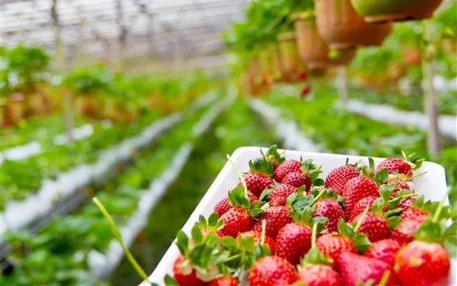

Agricultura Solidária
Semeando o bem
Qual é o nosso objetivo?
O nosso objetivo é, por meio do site, doar alimentos para pessoas necessitadas da forma mais fácil e acessível possível. Através do projeto, queremos transformar a vida dos moradores da comunidade, promovendo o acesso gratuito a frutas, verduras e hortaliças.
Como receber uma doação?
- Efetue o cadastro da forma correta.
- Selecione a aba "produtos".
- Escolha o produto desejado.
- Clique em confirmar e informaremos o local de retirada do alimento.
Como ser um doador?
- Efetue o cadastro.
- Vá até seu perfil, no canto superior direito.
- Selecione a opção "Doar".
- Preencha todas as informações. E clique em Confirmar.
- Receberá o código da doação, e o endereço do ponto de entrega.
Primeira vez aqui? Cadastre-se!
